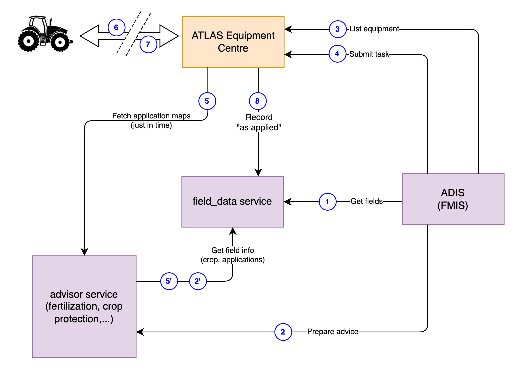
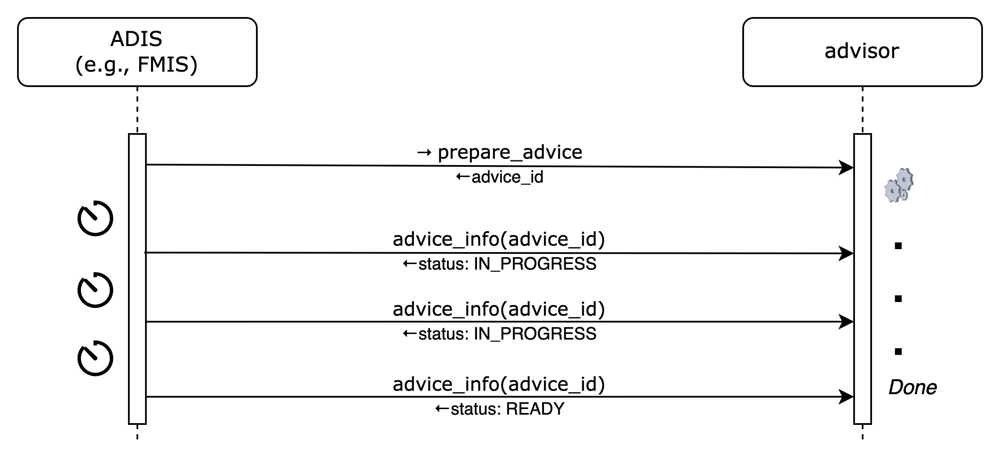

The "harvesting_advisor" ATLAS Service Template
Abstract
This document describes the specifications for harvesting_advisor services; they typically use agronomical algorithms to provide advice on harvesting which would then be typically carried out by the ATLAS Equipment Centre.
1 Introduction
harvesting_advisor services determine are needed for to plan tasks with the ATLAS Equipment Centre. They may also provided alerts for when harvesting operations should be carried out.
Farmers may use different harvesting_advisor services depending on the specific seeds they use, their budget, the accuracy and the granularity of information they require, etc.
2 Terminology
The key words "MUST", "MUST NOT", "REQUIRED", "SHALL", "SHALL NOT", "SHOULD", "SHOULD NOT", "RECOMMENDED", "NOT RECOMMENDED", "MAY", and "OPTIONAL" in this document are to be interpreted as described in RFC 2119 and indicate requirement levels for compliant implementations.
The notation "[xxx]" (xxx in square brackets) is equivalent to "array of xxx".
When used alone, the term "harvesting_advisor" refers to "harvesting_advisor ATLAS Service Template". Instead, "harvesting_advisor service" is equivalent to "an ATLAS Service implementing the harvesting_advisor ATLAS Service Template".
3 Pre-requisites
A thorough understanding in the following is required for
both service consumers or service provider implementors:
- GeoJSON specifications (https://geojson.org/)
4 The Advisor Lifecycle
harvesting_advisor is an "advisor-type" service template. All such services follow a common pattern that typically (but not always) involves the ATLAS Equipment Centre, and an ATLAS-enabled Digital Information System such as an FMIS, as seen below:
 The high level flow is: prepare an advice for a farming operation => submit a task with the advice and the equipment that it should be carried with => retrieve the application map from the advice just before sending it to the equipment => carry out the task with the equipment on the field => retrieve the "as applied" information from the equipment and record it on the field_data service
The ADIS will usually have a mirror copy of the fields, preloaded from a field_data service.
If the monitoring functionality is supported by an advisor, in a setup phase, the ADIS may activate the monitoring of a field, providing a notification url. In the operation phase, the ADIS may either poll for recommendations or receive notifications with recommendations from the advisor (see Dynamic Behaviour). The advisor service must be paired with the requested field's field_data service in order to retrieve the field's boundaries and any other information that may be relevant (crop, previous applications, ...)
The ADIS may use recommendations (recommendations are specific to the type of advisor) as the basis of an advice preparation or it may manually decide to prepare an advice based on its own criteria (2).
Depending on service implementations, advice preparations could take milliseconds to hours (in some cases, weeks) to complete. The ADIS will have to either poll the advisor or register a notification_url in the preparation request to determine when an advice is completed and a task may be created (see Dynamic Behaviour).
As an advice is ready, the ADIS will usually let the user select an equipment out of the ones he owns (3) and then submits a task to the ATLAS Equipment Centre, with the advice and the selected equipment as parameters (4). The task is recorded by the ATLAS Equipment Centre but may take an unknown amount of time before it is actually carried out.
When the ATLAS Equipment Centre determines that a task is ready to be executed (available worker and equipment), it retrieves the application map (5), just before starting the task, giving the advisor the opportunity to update potentially pre-computed maps taking latest information (weather, new applications, ...) into account. That information is sent to the tractor (6), and eventually, "as applied" information is sent back (7) to the ATLAS Equipment Centre which then records the application on the appropriate field_data service (8). Note that results may be partial, resulting in multiple applications for a single task.
When the task is finished, it is marked as completed, and a notification is sent back to the ADIS (9), but only if it provided a notification URL. Note that when a notification URL is provided with the task, notifications will also be changed for any status change.
The high level flow is: prepare an advice for a farming operation => submit a task with the advice and the equipment that it should be carried with => retrieve the application map from the advice just before sending it to the equipment => carry out the task with the equipment on the field => retrieve the "as applied" information from the equipment and record it on the field_data service
The ADIS will usually have a mirror copy of the fields, preloaded from a field_data service.
If the monitoring functionality is supported by an advisor, in a setup phase, the ADIS may activate the monitoring of a field, providing a notification url. In the operation phase, the ADIS may either poll for recommendations or receive notifications with recommendations from the advisor (see Dynamic Behaviour). The advisor service must be paired with the requested field's field_data service in order to retrieve the field's boundaries and any other information that may be relevant (crop, previous applications, ...)
The ADIS may use recommendations (recommendations are specific to the type of advisor) as the basis of an advice preparation or it may manually decide to prepare an advice based on its own criteria (2).
Depending on service implementations, advice preparations could take milliseconds to hours (in some cases, weeks) to complete. The ADIS will have to either poll the advisor or register a notification_url in the preparation request to determine when an advice is completed and a task may be created (see Dynamic Behaviour).
As an advice is ready, the ADIS will usually let the user select an equipment out of the ones he owns (3) and then submits a task to the ATLAS Equipment Centre, with the advice and the selected equipment as parameters (4). The task is recorded by the ATLAS Equipment Centre but may take an unknown amount of time before it is actually carried out.
When the ATLAS Equipment Centre determines that a task is ready to be executed (available worker and equipment), it retrieves the application map (5), just before starting the task, giving the advisor the opportunity to update potentially pre-computed maps taking latest information (weather, new applications, ...) into account. That information is sent to the tractor (6), and eventually, "as applied" information is sent back (7) to the ATLAS Equipment Centre which then records the application on the appropriate field_data service (8). Note that results may be partial, resulting in multiple applications for a single task.
When the task is finished, it is marked as completed, and a notification is sent back to the ADIS (9), but only if it provided a notification URL. Note that when a notification URL is provided with the task, notifications will also be changed for any status change.
5 harvesting_advisor Usage Scenarios
A harvesting_advisor service may provide recommendations as to the optimal time for harvesting, based on the crop, its stage of maturation and current / forecasted meteorological conditions.
6 Service Template API Overview
This section provides a very high-level summary of the harvesting_advisor API:
Harvesting Monitoring Endpoints
Monitor field
Get field monitoring status
Unmonitor field
Advice Endpoints
Prepare Advice
Get Advice
Cancel Advice
Implementations of harvesting_advisor may require more parameters that are not included in the API. Such implementations MAY provide end-user configuration and management tools in a proprietary user interface.
Within this section, operations are summarised with simple tables:
+--------------------------------------------+
| logical operation name |
+-------------+------------------------------+
| Inputs | <URL parameters or |
| | request body attributes> |
+-------------+------------------------------+
| Outputs | <body attributes> |
+-------------+------------------------------+
Only the most meaningful parameters are discussed in this document. Please refer to the OpenAPI specifications for full details.
harvesting_advisor services are not required to handle intense traffic from a single client, such as the one that may result from being directly invoked on user interface interactions in an FMIS, for instance. Implementors MAY generate a 429 TOO MANY REQUESTS error response if the rate of calls exceed some pre-defined quota.
6.1 Harvesting Monitoring Endpoints
These functions relate to registering, and unregistering fields for which alerts are desired. harvesting_advisor services may provide the means to actively monitor fields and generate alerts when harvesting is recommended.
6.1.1 Monitor Field
This endpoint registers a field to be monitored for sowing a particular with the harvesting_advisor.
+--------------------------------------------+
| monitor_field |
+-------------+------------------------------+
| Inputs | field urn, notification url |
+-------------+------------------------------+
| Outputs | |
+-------------+------------------------------+
See Sowing Monitoring for details on the monitoring notification process.
6.1.2 Get field monitoring status
This endpoint returns the monitoring info for a field.
+--------------------------------------------+
| monitoring_info |
+-------------+------------------------------+
| Inputs | field urn |
+-------------+------------------------------+
| Outputs | status, [recommendations] |
+-------------+------------------------------+
The status may be one of IN_PROGRESS, CONFIGURATION_REQUIRED, READY, FAILED. In this context, the IN_PROGRESS status indicates that some background processing is still being carried out and that the service is not yet ready to perform active monitoring. The CONFIGURATION_REQUIRED status indicates that the end-user is required to perform some manual configuration on the service's proprietary UI. FAILED indicates that monitoring is not possible. 0 or more alerts may be present only when the status is READY.
If the status is READY then there may be a recommendation to perform a harvesting operation on the field.
6.1.3 Unmonitor field
This endpoint cancels monitoring for a field.
+--------------------------------------------+
| unmonitor_field |
+-------------+------------------------------+
| Inputs | field urn |
+-------------+------------------------------+
| Outputs | |
+-------------+------------------------------+
6.2 Advice Endpoints
These endpoints relate to the creation of sowing advices. An advice may be requested to plan and optimize sowing for a particular crop.
6.2.1 Prepare Advice
This endpoint is used to requests an advice. Harvesting advices do not have applications; they are only required for interoperability with the ATLAS Equipment Centre.
the applications that will be carried out (one or more) and their associated products, so that they may optimize advised application maps accordingly.
+--------------------------------------------+
| prepare_advice |
+-------------+------------------------------+
| Inputs | field urn |
+-------------+------------------------------+
| Outputs | advice urn |
+-------------+------------------------------+
harvesting advices are needed exclusively for ATLAS Equipment Centre; they are needed to plan harvesting operations on a field.
Advice preparation may be a lengthy process. Clients may either poll or request to be notified to determine that the advice is READY (see Advice Preparation).
6.2.2 Get Advice Info
This function returns status information about an advice.
+--------------------------------------------+
| advice_info |
+-------------+------------------------------+
| Inputs | advice urn |
+-------------+------------------------------+
| Outputs | advice info |
+-------------+------------------------------+
In addition to the information submitted when preparing the advice, the advice info also contains a status about the advice preparation which is one of IN_PROGRESS, CONFIGURATION_REQUIRED, READY, FAILED. In this context, the IN_PROGRESS status indicates that some background processing is still being carried out and that the advice is not yet. The CONFIGURATION_REQUIRED status indicates that the end-user is required to perform some manual configuration on the service’s proprietary UI in order to enable the completion of the requested advice.
6.2.3 Cancel Advice
+--------------------------------------------+
| cancel_advice |
+-------------+------------------------------+
| Inputs | advice urn |
+-------------+------------------------------+
| Outputs | - |
+-------------+------------------------------+
Invoking this endpoint causes the advice status to become FAILED. If an advice that is not yet in READY state is cancelled and if a notification URL was provided in the prepare_advice request, a notification MUST be dispatched.
7 Access and Authentication
Farmers MUST have an account setup on an advisor service in order to authenticate and access API endpoints. The service implementor is responsible for the creation of accounts; it is not covered in the service template specifications.
Unless specifically documented in the OpenAPI specifications, all API calls must include credentials in form of Bearer authentication (also called token authentication). Clients can obtain an access token on behalf of their user from the service's authorization server (see ATLAS service pairing).
Some of the information held by advisor services may be considered sensitive from a GDPR perspective. The service's authorization server SHOULD request the client's end-user consent at service pairing time in order to deliver an access token.
8 Dynamic Behaviour
The purpose of the diagrams in this section is to illustrate communication patterns, more complex than plain request/response API calls, that involve several interactions and/or asynchronous behaviour. Even though a sequence diagram representation is used, the diagrams are by no means to be interpreted as UML Sequence Diagrams. Specifically, in the spirit of focusing on functional behaviour and readability, error handling is deliberately not covered in the diagrams.
The dynamic behaviour is similar for most advisor-type service templates (see The Advisor Lifecycle).
8.1 Sowing Lifecycle
The "Sowing lifecycle" in ATLAS typically operates in a larger context involving three services and an end-user application such as an FMIS which, in collaboration, provide an end-to-end solution from algorithmically computed advices to actual operations performed on a field.

8.1 Harvesting Monitoring
There are two methods for determining whether a monitoring request has completed (successfully or unsuccessfully): by polling the monitoring_info endpoint or by notification.
8.1.1 Polling
After requesting a field to be monitored, the client polls monitoring_info endpoint at regular intervals until the returned status is CONFIGURATION_REQUIRED, READY or FAILED.
A CONFIGURATION_REQUIRED status indicates that a user action is required on the proprietary user interface of the advisor. By convention, in case of CONFIGURATION_REQUIRED status, the advisor MAY return a browser URL to the location where a user can provide additional parameters (as required for a specific service implementation). It is the user interface of the client application originating the request to display an appropriate message to the end-user with a clickable link to the provided URL.
8.1.2 Notification
If a notification URL was supplied on the monitor_field endpoint, it will be invoked by the advisor when the monitoring status changes.
Advanced advisors have the ability to monitor conditions on fields in the background and proactively generate nutrient alerts on the notification URL provided at field registration.
Advisors MUST invoke the notification URL supplied by the client with an HTTPS POST command. The payload will be identical to the one that would be returned by a request to the monitoring_info endpoint.
8.2 Advice Preparation
There are two methods for determining whether an advice preparation has completed (successfully or unsuccessfully): by polling the advice_info endpoint or by notification.
8.2.1 Polling
After requesting an advice preparation, the client polls the advice_info endpoint at regular intervals until the returned status is READY or FAILED.
The status may be CONFIGURATION_REQUIRED which indicates that a user action is required on the user interface of the advisor. By convention, in case of CONFIGURATION_REQUIRED status, the service SHOULD return a browser URL to the location where a user can provide additional parameters (as required for a specific service implementation). It is the user interface of the ADIS originating the request to display an appropriate message to the end-user with a clickable link to the provided URL.

8.2.2 Notification
If a notification URL was supplied on the prepare_advice endpoint, it will be invoked by the advisor when the preparation status changes.
 Advisors MUST invoke the notification URL supplied by the client with an HTTPS POST command. The payload will be identical to the one that would be returned by the advice_info request.
Advisors MUST invoke the notification URL supplied by the client with an HTTPS POST command. The payload will be identical to the one that would be returned by the advice_info request.
8.3 General Comments on Notifications
Services must provide best efforts to deliver notifications. A notification is considered successful if the target returns an http result code 2XX.
Errors may occur during notification delivery. Depending on the type of error, services must react in different ways:
i) Network error - the connection to the client's host (from notification URL) cannot be established. The service MUST retry a certain number of times. The number of retries and possible backoff strategy is left at the discretion of the service implementer.
ii) Server errors (5XX result code) - these errors are potentially transient. The same strategy as for Network errors SHOULD be applied.
iii) Client errors (4XX result code) - typically when the notification URL is invalid, or the authentication is invalid/expired. 4XX errors should never be sent for transient client-side conditions and therefore services SHOULD NOT attempt retries.
Upon an excessive number of errors, services MAY give up further notification attempts. In that case, clients can only retrieve completion information via polling.